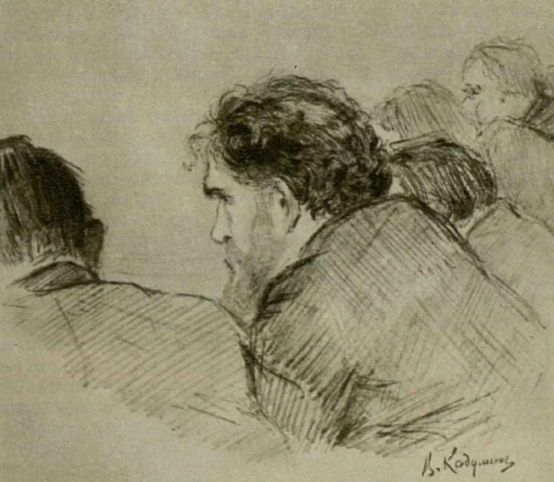
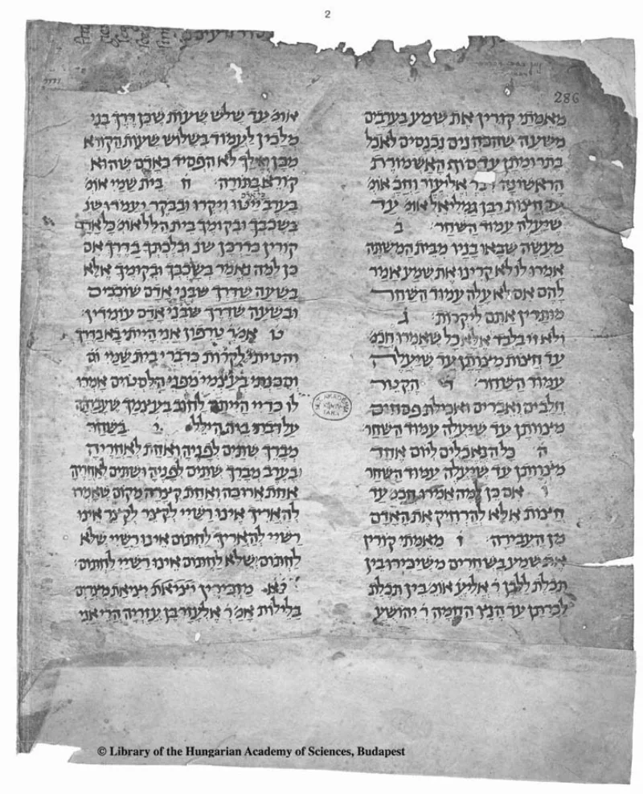
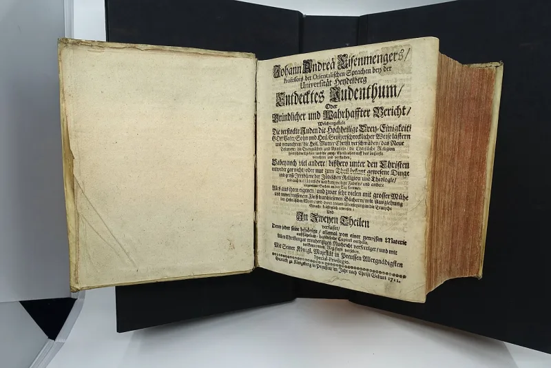

This Christian argument does not hold up. Drop it.
Lists of shocking quotations said to come from the Talmud. They are easy to find and they look damning.
Do not use them.
Most are made up, mistranslated, or cut away from the words around them. The Talmud is a huge record of debate.
It writes down the losing side of an argument next to the winning side. So a quotation can be the exact opposite of the ruling.
Most of these lists trace back to the Middle Ages. They were assembled for forced public debates, to justify what was done next.
That is the company you keep when you repeat them.
If you cannot read the passage in context on Sefaria, do not use it. That check takes thirty seconds, and your friend can do it faster than you can.
If you have used one: "I repeated something about the Talmud once that turned out to be fake. I stopped doing that."



There is no honest defence of a forgery; the real passages add almost nothing.
There is no honest case for a forged quote. Here is the only real residue.
A few real Talmud passages may argue against a figure some copies call Yeshu. Scholars dispute whether that is Jesus of Nazareth at all. The dates are off by about a century.
At most they show that Jews in late antiquity turned down Christian claims, which was never in doubt. And they were written under persecution by the church. Quoting them as ammunition means using the words of a wounded people against them, and ignoring who wounded them.
Don't use these quotes: passing on a fake is bearing false witness.
Do not use this, and name the practice when you see it. The commandment against false witness applies to citations too.
A Christian who forwards a fake Talmud quote is bearing false witness against a neighbour, in Christ's name. And the genre has a body count: the Beilis trial, and Nazi reprints of Rohling. If a Talmud passage genuinely matters to your argument, the rule is simple. Read it in context on Sefaria first, or do not use it.